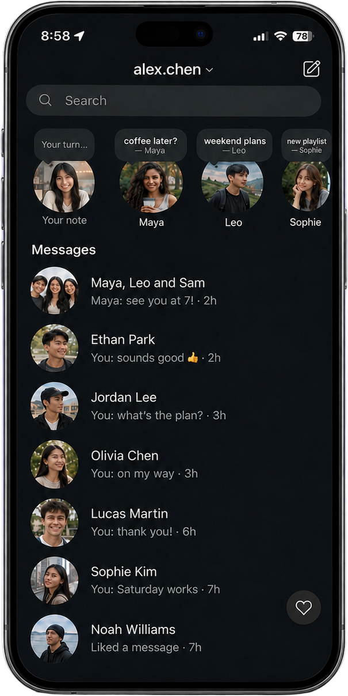
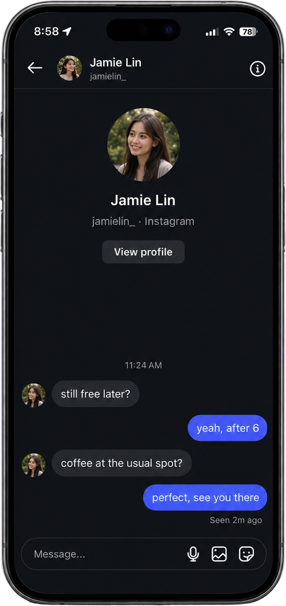

Your DMs and friends’ Stories still work.
I want to…
Best guess is fine.
An estimate is fine.
At your current pace, Instagram is on track to take
of your life distracted on your phone.
Tap to continue
But staying connected only takes a fraction of that.
You don’t have to give up DMs or Stories.
Konvo could help you get back
of your life to achieve your dreams and work on my own projects.
They’re removed completely, so there’s nothing pulling you into a scroll.
DMs, group chats, voice notes and friends’ Stories still work.

Your DMs and Stories are ready.
First 14 days free, then $29.99 ($2.50/month).
About 15 hours a week for projects you care about.
Unlock your DMs and Stories in Konvo. Pay $0.
Halfway through your trial. Still $0, nothing changes.
You’ll be charged on Aug 15, cancel anytime before.
Your DMs and Stories are ready.